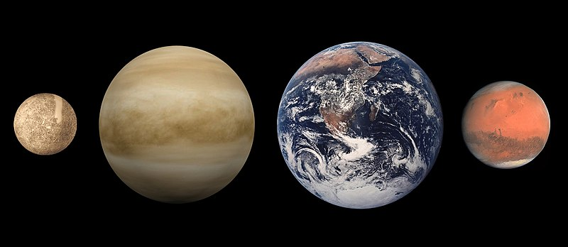

Земля
- третья по удалённости от Солнца планета Солнечной системы.
Самая плотная, пятая по диаметру и массе среди всех планет и крупнейшая
среди планет земной группы, в которую входят также Меркурий, Венера и Марс.
Единственное известное человеку в настоящее время тело Солнечной системы
в частности и Вселенной вообще, населённое живыми организмами.
Будущее планеты тесно связано с будущим Солнца. В результате накопления в ядре
Солнца отработанного гелия светимость звезды начнёт медленно возрастать.
Она увеличится на 10 процентов в течение следующих 1,1 млрд лет, и в
результате этого обитаемая зона Солнечной системы сместится за пределы
современной земной орбиты. Согласно некоторым климатическим моделям,
увеличение количества солнечного излучения, падающего на поверхность Земли,
приведёт к катастрофическим последствиям, включая возможность полного
испарения всех океанов.
Содержание
- Строение Земли
- Экология
Закат.Видео.
